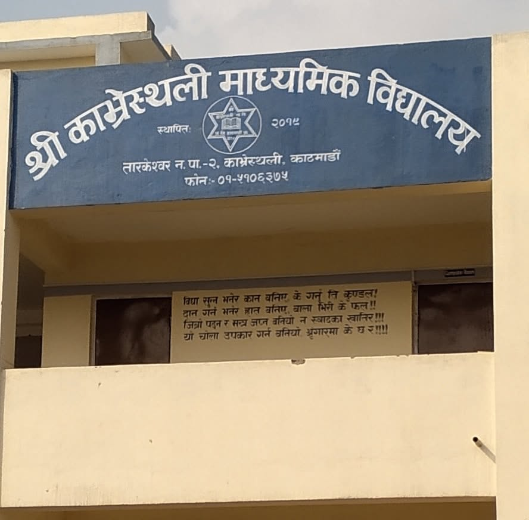

Public school in Tarakeshwor, Kathmandu
Kavresthali
Secondary School
Knowledge, Discipline, Service
A welcoming learning community serving students from Grade 1 to Grade 10 in Kavresthali. We help young people grow through learning, character, and service.

Our school
A place to learn and belong
Kavresthali Secondary School is a government-affiliated public school serving the local community from its home in Kavresthali VDC, Kathmandu. Public references describe the school as serving approximately 300 students across Grades 1 to 10.
School profile
The story behind KSS
Founded to serve the Kavresthali community, the school has grown as a local public institution focused on accessible education, responsible citizenship, and steady academic progress.
Our identity
Knowledge, discipline, and service
The school welcomes learners from primary through secondary level and remains connected to the community it serves.
FounderMr. Tirtha Prasad Dhakal
DirectorMr. Shukdev Dhakal
HeadmasterMr. Prahlad Pokhrel
AffiliationNepal Government
School typePublic school
NicknameThati
जननी जन्मभूमिश्च स्वर्गादपि गरीयसीMother and motherland are greater than heaven.
Learning at KSS
Growing curious, capable citizens
Foundational learning
Strong literacy, numeracy, and learning habits for students in the primary grades.
Secondary preparation
Subject learning and practical skills that prepare students for the SEE pathway and beyond.
Character and service
A school culture shaped by knowledge, discipline, responsibility, and community.
Stay connected
School notices
Students, families, and staff
Enter portalUse the school portal for attendance, schedules, grades, notices, and role-based services.
Find us
Visit Kavresthali
Address
Kavresthali, Tarakeshwor, Kathmandu, Bagmati Province, Nepal
School phone
Public listing
Open during school hours; please call ahead for visits.
जननी जन्मभूमिश्च स्वर्गादपि गरीयसी
Mother and motherland are greater than heaven.